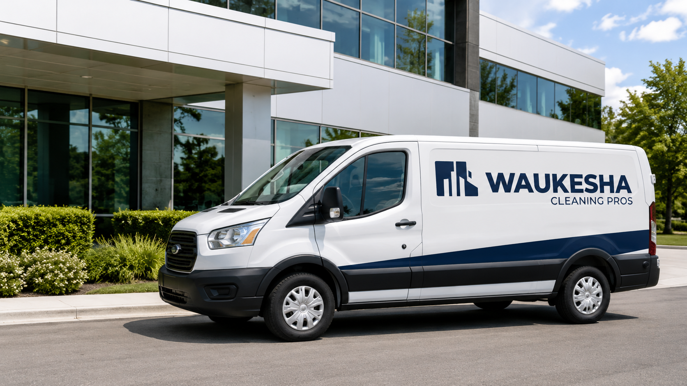

Industrial Cleaning for Warehouses and Manufacturing Spaces
Industrial and manufacturing facilities need cleaning plans that account for heavier traffic, larger square footage, employee break areas, restrooms, offices, and production-adjacent spaces. We build practical scopes for busy commercial environments.
Industrial cleaning built around your facility
Industrial cleaning should be scoped around how the building is actually used, not a generic checklist. During a walkthrough, Waukesha Cleaning Pros reviews traffic patterns, restrooms, floors, customer-facing spaces, employee areas, and the cleaning frequency that makes sense for the facility.
The result is a practical cleaning plan that can include recurring service, high-touch cleaning, trash removal, restroom cleaning, breakroom cleaning, floor care, and detail work where it matters most.
- Recurring cleaning plans
- Restroom, breakroom, and floor care
- High-touch cleaning and trash removal
Common industrial cleaning tasks
Compare related cleaning services
Businesses trust Waukesha Cleaning Pros to keep their spaces ready.
Industrial cleaning questions
How often should industrial cleaning be scheduled?
Frequency depends on square footage, restroom count, employee count, visitor traffic, and how visible the space is to customers or tenants.
Can you clean after business hours?
Yes. We can discuss evening, early morning, or business-hour cleaning options during the walkthrough.
Can the cleaning scope be customized?
Yes. The cleaning scope is built around your facility type, cleaning priorities, square footage, and preferred schedule.
Satisfaction Guaranteed
If you're not completely happy with the cleaning, we wipe it from the invoice.
Get a quote for your actual building
Share your contact information and building type. We will follow up to discuss square footage, cleaning frequency, timing, and the areas that matter most.